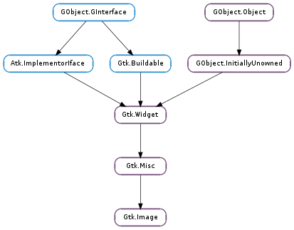

| static | new() |
| static | new_from_animation(animation) |
| static | new_from_file(filename) |
| static | new_from_gicon(icon, size) |
| static | new_from_icon_name(icon_name, size) |
| static | new_from_icon_set(icon_set, size) |
| static | new_from_pixbuf(pixbuf) |
| static | new_from_resource(resource_path) |
| static | new_from_stock(stock_id, size) |
| static | new_from_surface(surface) |
| clear() | |
| get_animation() | |
| get_gicon() | |
| get_icon_name() | |
| get_icon_set() | |
| get_pixbuf() | |
| get_pixel_size() | |
| get_stock() | |
| get_storage_type() | |
| set_from_animation(animation) | |
| set_from_file(filename) | |
| set_from_gicon(icon, size) | |
| set_from_icon_name(icon_name, size) | |
| set_from_icon_set(icon_set, size) | |
| set_from_pixbuf(pixbuf) | |
| set_from_resource(resource_path) | |
| set_from_stock(stock_id, size) | |
| set_from_surface(surface) | |
| set_pixel_size(pixel_size) |
| Name | Type | Flags | Description |
|---|---|---|---|
| file | str | r/w | Filename to load and display |
| gicon | Gio.Icon | r/w | The Gio.Icon being displayed |
| icon-name | str | r/w | The name of the icon from the icon theme |
| icon-set | Gtk.IconSet | r/w | Icon set to display |
| icon-size | int | r/w | Symbolic size to use for stock icon, icon set or named icon |
| pixbuf | GdkPixbuf.Pixbuf | r/w | A GdkPixbuf.Pixbuf to display |
| pixbuf-animation | GdkPixbuf.PixbufAnimation | r/w | GdkPixbuf.PixbufAnimation to display |
| pixel-size | int | r/w | Pixel size to use for named icon |
| resource | str | r/w | The resource path being displayed |
| stock | str | r/w | Stock ID for a stock image to display |
| storage-type | Gtk.ImageType | r | The representation being used for image data |
| surface | cairo.Surface | r/w | A cairo.Surface to display |
| use-fallback | bool | r/w | Whether to use icon names fallback |
None
Bases: Gtk.Misc
The Gtk.Image widget displays an image. Various kinds of object can be displayed as an image; most typically, you would load a GdkPixbuf.Pixbuf (“pixel buffer”) from a file, and then display that. There’s a convenience function to do this, Gtk.Image.new_from_file (), used as follows:
GtkWidget *image;
image = gtk_image_new_from_file ("myfile.png");
If the file isn’t loaded successfully, the image will contain a “broken image” icon similar to that used in many web browsers. If you want to handle errors in loading the file yourself, for example by displaying an error message, then load the image with GdkPixbuf.Pixbuf.new_from_file (), then create the Gtk.Image with Gtk.Image.new_from_pixbuf ().
The image file may contain an animation, if so the Gtk.Image will display an animation (GdkPixbuf.PixbufAnimation ) instead of a static image.
Gtk.Image is a subclass of Gtk.Misc, which implies that you can align it (center, left, right) and add padding to it, using Gtk.Misc methods.
Gtk.Image is a “no window” widget (has no Gdk.Window of its own), so by default does not receive events. If you want to receive events on the image, such as button clicks, place the image inside a Gtk.EventBox, then connect to the event signals on the event box.
Handling button press events on aGtkImage.
static gboolean
button_press_callback (GtkWidget *event_box,
GdkEventButton *event,
gpointer data)
{
g_print ("Event box clicked at coordinates &percntf,&percntf\n",
event->x, event->y);
/* Returning TRUE means we handled the event, so the signal
* emission should be stopped (don't call any further
* callbacks that may be connected). Return FALSE
* to continue invoking callbacks.
*/
return TRUE;
}
static GtkWidget*
create_image (void)
{
GtkWidget *image;
GtkWidget *event_box;
image = gtk_image_new_from_file ("myfile.png");
event_box = gtk_event_box_new ();
gtk_container_add (GTK_CONTAINER (event_box), image);
g_signal_connect (G_OBJECT (event_box),
"button_press_event",
G_CALLBACK (button_press_callback),
image);
return image;
}
When handling events on the event box, keep in mind that coordinates in the image may be different from event box coordinates due to the alignment and padding settings on the image (see Gtk.Misc ). The simplest way to solve this is to set the alignment to 0.0 (left/top), and set the padding to zero. Then the origin of the image will be the same as the origin of the event box.
Sometimes an application will want to avoid depending on external data files, such as image files. GTK+ comes with a program to avoid this, called gdk-pixbuf-csource. This library allows you to convert an image into a C variable declaration, which can then be loaded into a GdkPixbuf.Pixbuf using GdkPixbuf.Pixbuf.new_from_inline ().
| Returns: | a newly created Gtk.Image widget. |
|---|---|
| Return type: | Gtk.Widget |
Creates a new empty Gtk.Image widget.
| Parameters: | animation (GdkPixbuf.PixbufAnimation) – an animation |
|---|---|
| Returns: | a new Gtk.Image widget |
| Return type: | Gtk.Widget |
Creates a Gtk.Image displaying the given animation. The Gtk.Image does not assume a reference to the animation; you still need to unref it if you own references. Gtk.Image will add its own reference rather than adopting yours.
Note that the animation frames are shown using a timeout with GLib.PRIORITY_DEFAULT. When using animations to indicate busyness, keep in mind that the animation will only be shown if the main loop is not busy with something that has a higher priority.
| Parameters: | filename (str) – a filename |
|---|---|
| Returns: | a new Gtk.Image |
| Return type: | Gtk.Widget |
Creates a new Gtk.Image displaying the file filename. If the file isn’t found or can’t be loaded, the resulting Gtk.Image will display a “broken image” icon. This function never returns None, it always returns a valid Gtk.Image widget.
If the file contains an animation, the image will contain an animation.
If you need to detect failures to load the file, use GdkPixbuf.Pixbuf.new_from_file () to load the file yourself, then create the Gtk.Image from the pixbuf. (Or for animations, use GdkPixbuf.PixbufAnimation.new_from_file ()).
The storage type (Gtk.Image.get_storage_type ()) of the returned image is not defined, it will be whatever is appropriate for displaying the file.
| Parameters: | |
|---|---|
| Returns: | a new Gtk.Image displaying the themed icon |
| Return type: |
Creates a Gtk.Image displaying an icon from the current icon theme. If the icon name isn’t known, a “broken image” icon will be displayed instead. If the current icon theme is changed, the icon will be updated appropriately.
| Parameters: | |
|---|---|
| Returns: | a new Gtk.Image displaying the themed icon |
| Return type: |
Creates a Gtk.Image displaying an icon from the current icon theme. If the icon name isn’t known, a “broken image” icon will be displayed instead. If the current icon theme is changed, the icon will be updated appropriately.
| Parameters: |
|
|---|---|
| Returns: | a new Gtk.Image |
| Return type: |
Creates a Gtk.Image displaying an icon set. Sample stock sizes are Gtk.IconSize.MENU, Gtk.IconSize.SMALL_TOOLBAR. Instead of using this function, usually it’s better to create a Gtk.IconFactory, put your icon sets in the icon factory, add the icon factory to the list of default factories with Gtk.IconFactory.add_default (), and then use Gtk.Image.new_from_stock (). This will allow themes to override the icon you ship with your application.
The Gtk.Image does not assume a reference to the icon set; you still need to unref it if you own references. Gtk.Image will add its own reference rather than adopting yours.
| Parameters: | pixbuf (GdkPixbuf.Pixbuf or None) – a GdkPixbuf.Pixbuf, or None |
|---|---|
| Returns: | a new Gtk.Image |
| Return type: | Gtk.Widget |
Creates a new Gtk.Image displaying pixbuf. The Gtk.Image does not assume a reference to the pixbuf; you still need to unref it if you own references. Gtk.Image will add its own reference rather than adopting yours.
Note that this function just creates an Gtk.Image from the pixbuf. The Gtk.Image created will not react to state changes. Should you want that, you should use Gtk.Image.new_from_icon_name ().
| Parameters: | resource_path (str) – a resource path |
|---|---|
| Returns: | a new Gtk.Image |
| Return type: | Gtk.Widget |
Creates a new Gtk.Image displaying the resource file resource_path. If the file isn’t found or can’t be loaded, the resulting Gtk.Image will display a “broken image” icon. This function never returns None, it always returns a valid Gtk.Image widget.
If the file contains an animation, the image will contain an animation.
If you need to detect failures to load the file, use GdkPixbuf.Pixbuf.new_from_file () to load the file yourself, then create the Gtk.Image from the pixbuf. (Or for animations, use GdkPixbuf.PixbufAnimation.new_from_file ()).
The storage type (Gtk.Image.get_storage_type ()) of the returned image is not defined, it will be whatever is appropriate for displaying the file.
| Parameters: | |
|---|---|
| Returns: | a new Gtk.Image displaying the stock icon |
| Return type: |
Creates a Gtk.Image displaying a stock icon. Sample stock icon names are Gtk.STOCK_OPEN, Gtk.STOCK_QUIT. Sample stock sizes are Gtk.IconSize.MENU, Gtk.IconSize.SMALL_TOOLBAR. If the stock icon name isn’t known, the image will be empty. You can register your own stock icon names, see Gtk.IconFactory.add_default () and Gtk.IconFactory.add ().
| Parameters: | surface (cairo.Surface or None) – a cairo.Surface, or None |
|---|---|
| Returns: | a new Gtk.Image |
| Return type: | Gtk.Widget |
Creates a new Gtk.Image displaying surface. The Gtk.Image does not assume a reference to the surface; you still need to unref it if you own references. Gtk.Image will add its own reference rather than adopting yours.
Resets the image to be empty.
| Returns: | the displayed animation, or None if the image is empty |
|---|---|
| Return type: | GdkPixbuf.PixbufAnimation |
Gets the GdkPixbuf.PixbufAnimation being displayed by the Gtk.Image. The storage type of the image must be Gtk.ImageType.EMPTY or Gtk.ImageType.ANIMATION (see Gtk.Image.get_storage_type ()). The caller of this function does not own a reference to the returned animation.
| Return type: | gicon: Gio.Icon, size: int |
|---|
Gets the Gio.Icon and size being displayed by the Gtk.Image. The storage type of the image must be Gtk.ImageType.EMPTY or Gtk.ImageType.GICON (see Gtk.Image.get_storage_type ()). The caller of this function does not own a reference to the returned Gio.Icon.
| Return type: | icon_name: str, size: int |
|---|
Gets the icon name and size being displayed by the Gtk.Image. The storage type of the image must be Gtk.ImageType.EMPTY or Gtk.ImageType.ICON_NAME (see Gtk.Image.get_storage_type ()). The returned string is owned by the Gtk.Image and should not be freed.
| Return type: | icon_set: Gtk.IconSet, size: int |
|---|
Gets the icon set and size being displayed by the Gtk.Image. The storage type of the image must be Gtk.ImageType.EMPTY or Gtk.ImageType.ICON_SET (see Gtk.Image.get_storage_type ()).
| Returns: | the displayed pixbuf, or None if the image is empty |
|---|---|
| Return type: | GdkPixbuf.Pixbuf |
Gets the GdkPixbuf.Pixbuf being displayed by the Gtk.Image. The storage type of the image must be Gtk.ImageType.EMPTY or Gtk.ImageType.PIXBUF (see Gtk.Image.get_storage_type ()). The caller of this function does not own a reference to the returned pixbuf.
| Returns: | the pixel size used for named icons. |
|---|---|
| Return type: | int |
Gets the pixel size used for named icons.
| Return type: | stock_id: str, size: int |
|---|
Gets the stock icon name and size being displayed by the Gtk.Image. The storage type of the image must be Gtk.ImageType.EMPTY or Gtk.ImageType.STOCK (see Gtk.Image.get_storage_type ()). The returned string is owned by the Gtk.Image and should not be freed.
| Returns: | image representation being used |
|---|---|
| Return type: | Gtk.ImageType |
Gets the type of representation being used by the Gtk.Image to store image data. If the Gtk.Image has no image data, the return value will be Gtk.ImageType.EMPTY.
| Parameters: | animation (GdkPixbuf.PixbufAnimation) – the GdkPixbuf.PixbufAnimation |
|---|
Causes the Gtk.Image to display the given animation (or display nothing, if you set the animation to None ).
| Parameters: | filename (str or None) – a filename or None |
|---|
See Gtk.Image.new_from_file () for details.
| Parameters: |
|---|
See Gtk.Image.new_from_gicon () for details.
| Parameters: |
|---|
See Gtk.Image.new_from_icon_name () for details.
| Parameters: |
|
|---|
See Gtk.Image.new_from_icon_set () for details.
| Parameters: | pixbuf (GdkPixbuf.Pixbuf or None) – a GdkPixbuf.Pixbuf or None |
|---|
See Gtk.Image.new_from_pixbuf () for details.
| Parameters: | resource_path (str or None) – a resource path or None |
|---|
See Gtk.Image.new_from_resource () for details.
| Parameters: |
|---|
See Gtk.Image.new_from_stock () for details.
| Parameters: | surface (cairo.Surface) – a cairo.Surface |
|---|
See Gtk.Image.new_from_surface () for details.
| Parameters: | pixel_size (int) – the new pixel size |
|---|
Sets the pixel size to use for named icons. If the pixel size is set to a value != -1, it is used instead of the icon size set by Gtk.Image.set_from_icon_name ().